1 · Überblick
Motryx digitalisiert klinische Bewegungstests. Handbewegungen und Augenbewegungen werden kontaktlos erfasst und automatisch in quantitative Parameter übersetzt — live am Gerät oder nachträglich aus Handy-Videos. Alle Ergebnisse landen patientenbezogen in einer lokalen Datenbank und lassen sich als Verlauf über die Zeit betrachten.
| Testbatterie | Inhalt |
|---|---|
| Motorik (MDS-UPDRS III) | Finger Tapping (3.4) · Hand Öffnen/Schließen (3.5) · Pronation/Supination (3.6) · Posturaler Tremor (3.15) · Ruhetremor (3.17) |
| Kognitiv-motorisch | Türme von Hanoi · Räumliche Reaktionszeit (S-SRT) · Trail Making A/B |
| Okulomotorik (Webcam) | Fixation & Blinzeln · Sakkaden-Test (mit 5-Punkt-Eichung) |
| Gesten | 12 klinische Handposen mit Referenz-Bibliothek (Gesture Lab) |
2 · Schnellstart
- Starten: macOS
./start.sh· Windowsstart.ps1/start.bat(legt beim ersten Mal die Python-Umgebung an). Ohne Sensor:./start.sh --mock(Simulationsmodus). - Patient wählen oder neu anlegen (Startbildschirm).
- „＋ Neue Sitzung" öffnet den Sitzungsbildschirm. Über Hinzufügen: Protokoll aufnehmen, einzelnes Paradigma oder Video importieren.
- Je Schritt: Anweisung lesen → ● Aufnahme starten → Countdown → Aufnahme → Take ansehen → ✔ Übernehmen oder ↻ Wiederholen. Unter der Vorschau zeigt eine Zeile live, ob Hände und Gesicht erkannt werden.
- Ergebnis: mit „Nach Übernehmen automatisch auswerten" wird der bestätigte Take sofort analysiert; das Ergebnis steht in der Inhaltsliste und im Sitzungsbaum.
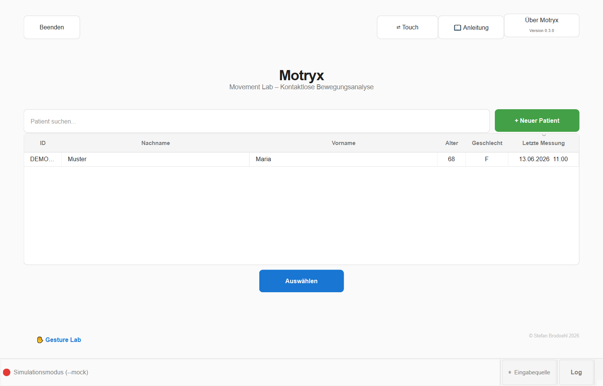
3 · Eingabequellen
Die Tracking-Quelle ist jederzeit umschaltbar (Startbildschirm → „Tracking"). Jede Messung speichert ihre Quelle mit; Tests, die eine Quelle nicht leisten kann, sind im Dashboard automatisch gesperrt (ausgegraut mit Begründung).
| Quelle | Stärken | Hinweise |
|---|---|---|
| Leap Motion | Präziseste 3D-Handdaten (echte mm, absolute Position), 120 Hz | Benötigt Sensor + Ultraleap-Software; keine Augen-Tests |
| Webcam | Ohne Spezialhardware; Hand- und Gesichts-/Augen-Tracking; Tremor über Augen-Referenz | mm-Werte sind Modellschätzungen (Anzeige „≈mm"); gute Beleuchtung wichtig |
| Video | Handy-Videos nachträglich auswerten (VideoLab) | siehe Kapitel VideoLab |
| Simulation | Demo & Schulung ohne Hardware | Ergebnisse deutlich als „⚠ SIMULATION" markiert |
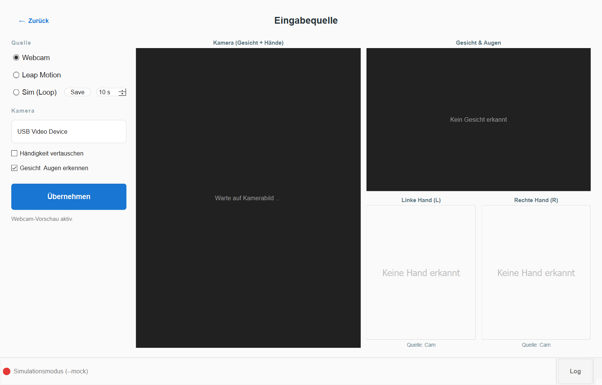
4 · Patienten & Sessions
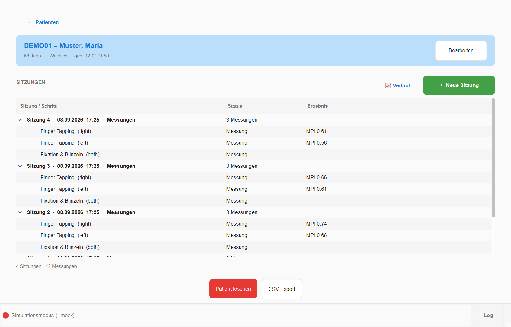
- Symbole im Baum: ○ offen · ◐ aufgenommen, noch nicht gesichtet · ✔ bestätigt (Video liegt vor);
die Spalte „Ergebnis" zeigt z. B.
Ruhetremor: MPI 0.62oder „nicht ausgewertet". - CSV-Export (unten) exportiert alle Messungen des Patienten für die Statistik.
- Jede Messung speichert Quelle (Leap/Webcam/Video/Simulation), Dauer und Rohdaten-Verweis.
5 · Tests durchführen
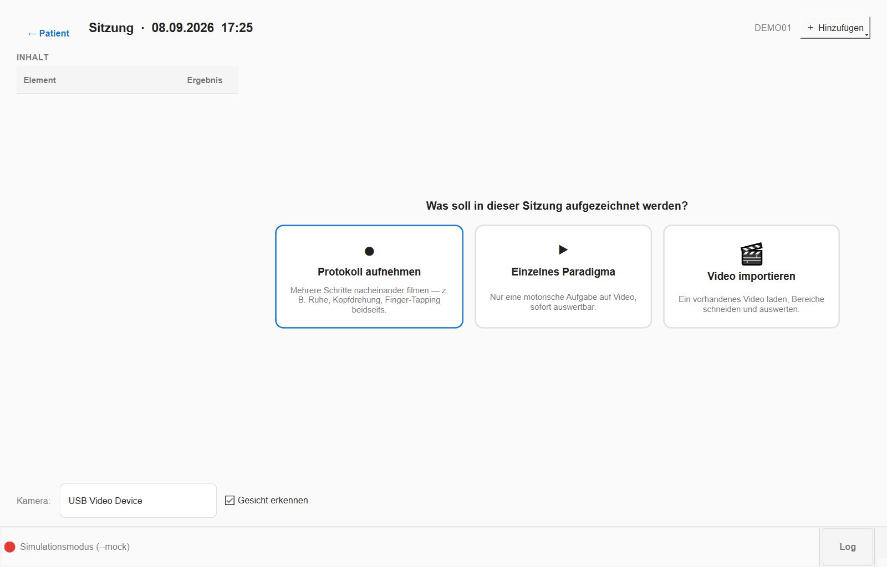
Ablauf Hand-Tests
- Kachel anklicken → Hand wählen (bzw. automatisch bei bilateral/kognitiv).
- Bereitschafts-Gate: Hand über Sensor / vor Kamera halten — erkannt → Countdown 3-2-1.
- Aufnahme mit Live-Kurve; Test stoppt automatisch nach der eingestellten Dauer.
Kognitiv-motorische Tests
- Türme von Hanoi: Scheiben per Pinzettengriff (Daumen+Zeigefinger) greifen, über den Zielstab führen, loslassen.
- S-SRT: Hand zum aufleuchtenden Ziel bewegen und kurz halten; misst implizites Sequenz-Lernen.
- Trail Making: Ziele in Reihenfolge „verbinden" (Teil A: Zahlen, Teil B: Zahlen/Buchstaben im Wechsel).
6 · Augen-Tests (Okulomotorik)
Beide Tests laufen über die Webcam und brauchen keine Hand. Voraussetzungen: Gesicht frontal, gut beleuchtet, vollständig im Bild; Abstand ca. 50–70 cm.
Fixation & Blinzeln
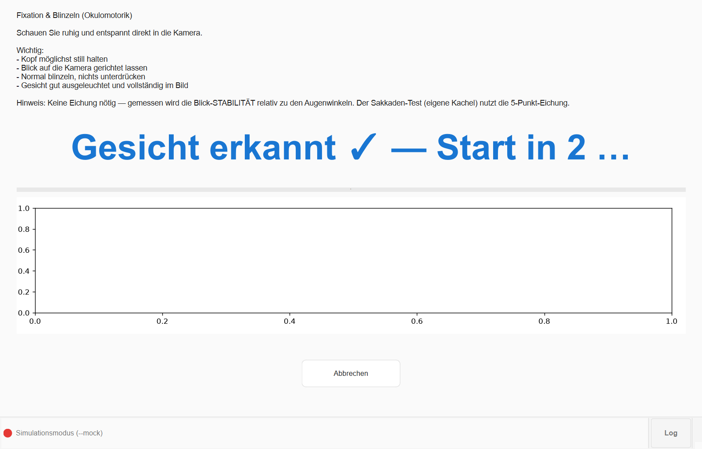
Proband schaut die Testdauer ruhig in die Kamera, Kopf still, normal blinzeln. Keine Eichung nötig — gemessen wird die Blick-Stabilität relativ zu den Augenwinkeln. Ergebnis: Blinkrate/min (bei M. Parkinson oft reduziert), Fixationsstreuung (%IPD), sakkadische Intrusionen, mittlere Lidspalte.
Sakkaden-Test
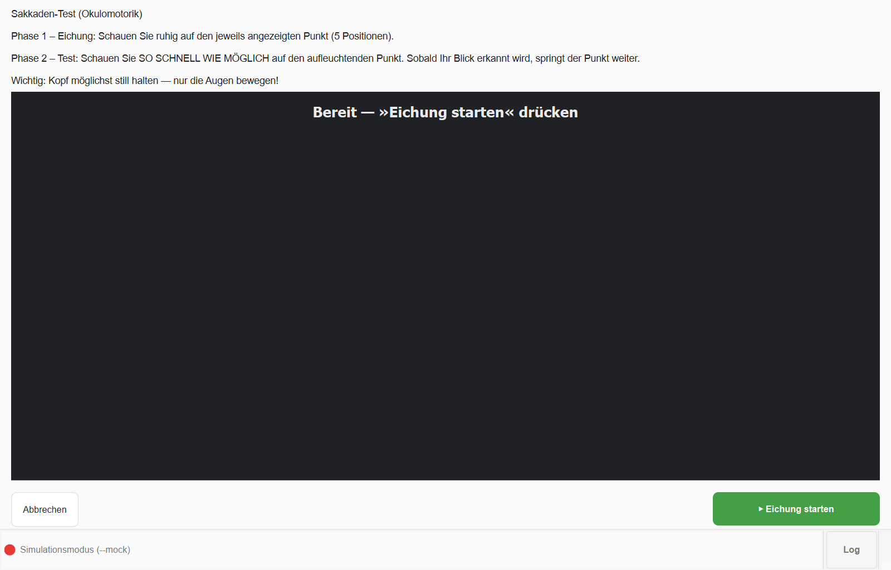
- Phase 1 – Eichung (~13 s): Ein Punkt erscheint nacheinander an 5 Positionen (Ecken + Mitte). Jeden Punkt ruhig fixieren, nur die Augen bewegen.
- Phase 2 – Test (30 s): Punkte erscheinen in zufälliger Folge (bevorzugt weite Sprünge). So schnell wie möglich hinschauen — sobald der Blick das Ziel kurz hält, springt der Punkt weiter.
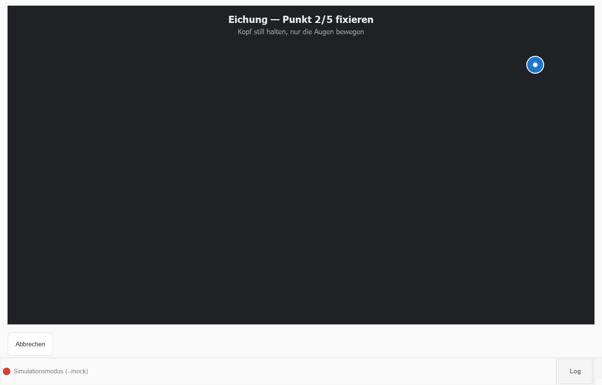
Ergebnis: erreichte Ziele & Ziele/min, Sakkaden-Latenz (Median/Mittel), Richtungsfehler-Rate, Anteil ungültiger Abschnitte (Kopfbewegung, Blinzeln).
paradigms/test_config.yaml → saccade_test.7 · Ergebnisse & Verlauf
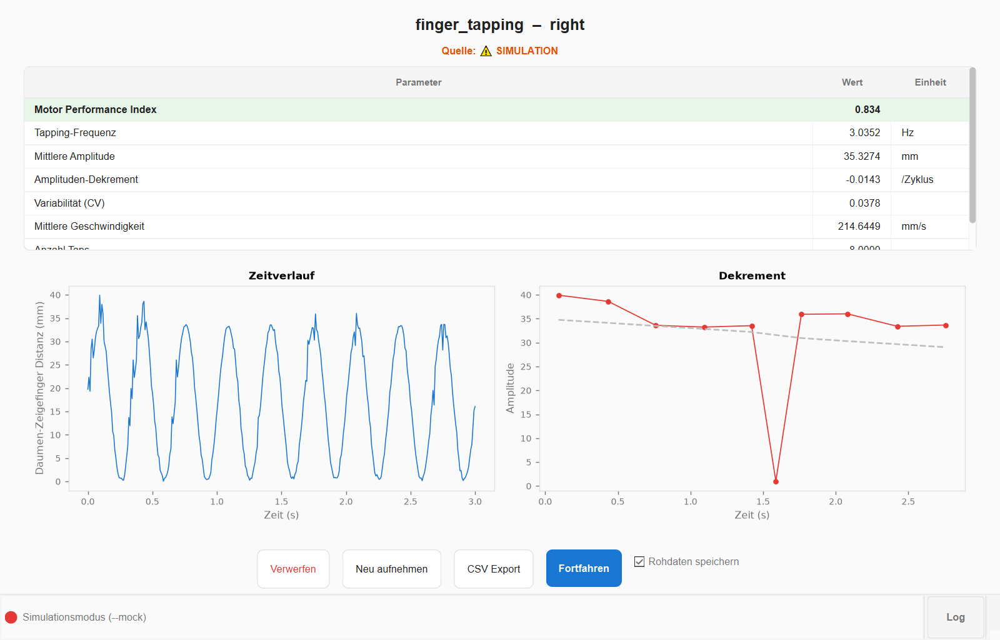
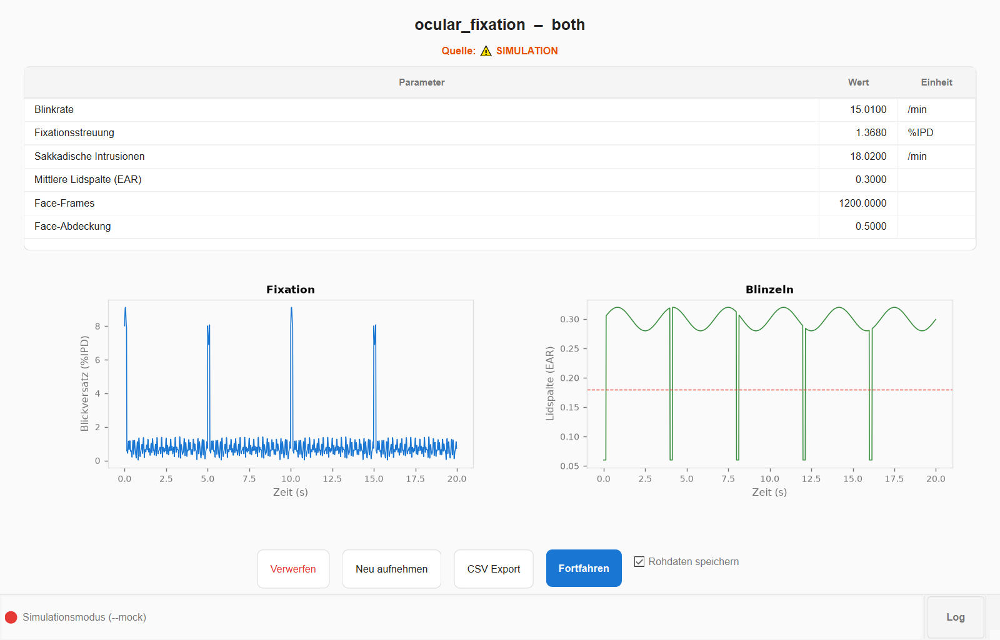
- MPI (Motor Performance Index): Komposit-Score 0–1 aus Geschwindigkeit, Amplitude, Ermüdung und Regelmäßigkeit — grün > 0,7 · gelb 0,4–0,7 · rot < 0,4.
- Automatisches Speichern: Jedes Ergebnis wird sofort in der Datenbank abgelegt („Verwerfen" löscht es wieder). Optional werden die Roh-Frames als JSON gesichert.
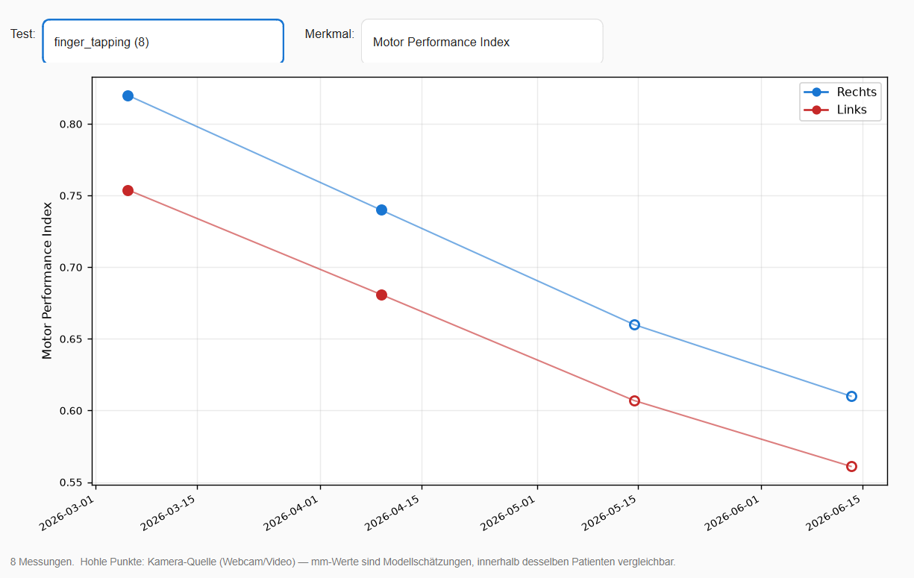
8 · Sitzung — Aufnahme, Import und Auswertung
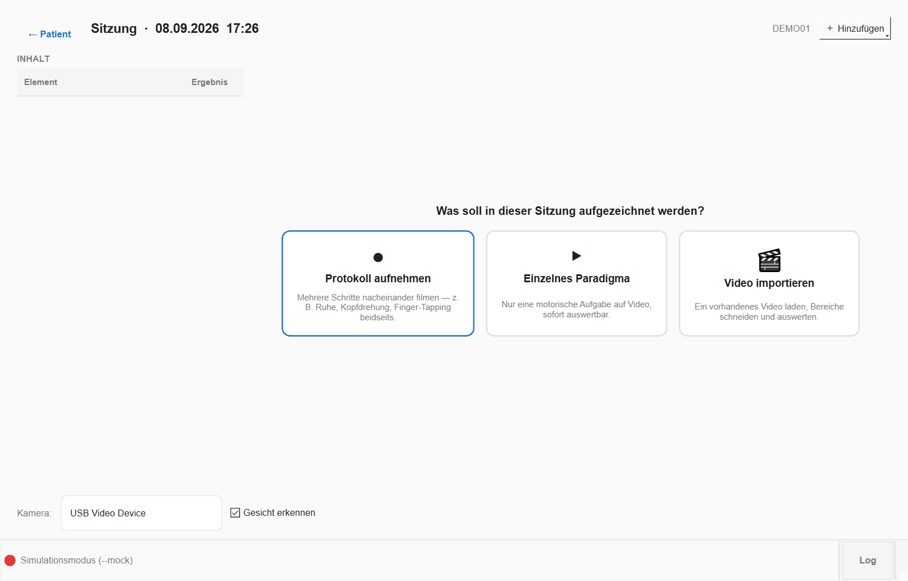
Über ＋ Hinzufügen kommt Inhalt in die Sitzung: Protokoll aufnehmen (mehrere Schritte nacheinander), Einzelnes Paradigma (ein Schritt) oder Video importieren. Ein importiertes Video erscheint als eigener Eintrag; angeklickt öffnet es den Schnitt-Bereich:
- Video laden — wird automatisch normalisiert (Größe/Format); falsch orientierte Videos mit ↻ 90° drehen.
- Segment markieren (Onset/Offset auf der Zeitleiste) → „Bereich übernehmen" → Paradigma + Hand wählen. Tremor ist per Augen-Referenz möglich (Gesicht muss im Video sichtbar sein).
- Defacing (Checkbox): anonymisiert das Gesicht im gespeicherten Segment-Clip — hand-schonend: eine Hand vor dem Gesicht bleibt scharf. Die Analyse läuft immer auf dem Original.
- ▶ Analyse starten — läuft mit Overlay und Live-Kurve; die bewegte Hand wird automatisch erkannt und der gewählten Seite zugeordnet.
- 💾 In Patientenakte übernimmt das Ergebnis als reguläre Messung (erscheint in Matrix und Verlauf, Quelle „video").
9 · Gesture Lab — klinische Handposen
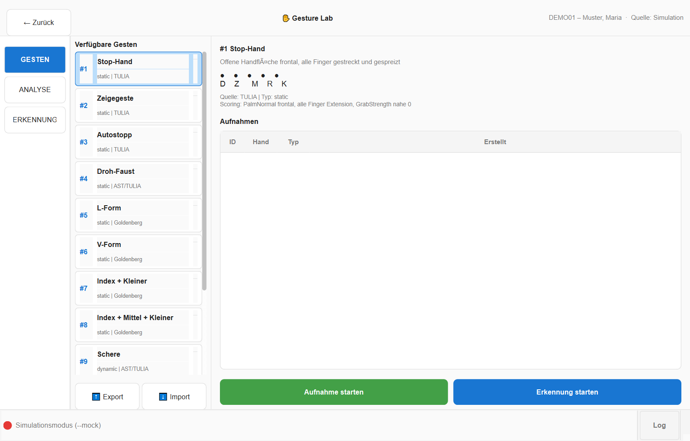
- Bibliothek aufbauen (einmalig, ohne Patient): im Bereich GESTEN jede Pose aufnehmen (statisch: stoppt automatisch nach 3 s). Mit ⬆ Export / ⬇ Import lässt sich die fertige Bibliothek als JSON zwischen Rechnern teilen.
- Patientenbezogene Batterie: aus der Patienten-Detailansicht öffnen → ERKENNUNG → Modus „Batterie" → alle 12 Posen durchlaufen → 💾 In Patientenakte speichern. Ergebnis (Score, Ähnlichkeiten pro Pose) erscheint in Matrix und Verlauf.
- Live-Feedback pro Finger (❌/✓) zeigt, welcher Finger von der Referenz abweicht.
10 · Tipps & Fehlerbehebung
| Problem | Lösung |
|---|---|
| „Sensor nicht erkannt" | Ultraleap-Software installiert und Dienst gestartet? USB prüfen (LED grün). Nur eine App-Instanz gleichzeitig. Details: README → Troubleshooting. |
| Webcam-Tests gesperrt | MediaPipe-Umgebung einrichten — Windows: powershell mediapipe_sidecar\setup_sidecar.ps1, macOS: bash mediapipe_sidecar/setup_sidecar.sh;
dann unter „Tracking" die Webcam übernehmen. |
| „Kein Gesicht erkannt" | Frontal in die Kamera, Gesicht vollständig im Bild, mehr Licht, starke Gegenlichter vermeiden. |
| Sakkaden-Eichung scheitert | Näher an den Bildschirm, Kopf ruhig (ggf. Kinn aufstützen);
Schwellen in test_config.yaml → saccade_test lockern. |
| Tremor auf Webcam gesperrt / Warnung „Augen-Referenz" | Gesicht muss mit im Bild sein (liefert den Maßstab). Bei < 50 % Abdeckung erscheint eine Warnung — Amplituden dann nicht verwenden. |
| Fehler direkt nach einem Software-Update | App einmal neu starten (alte Sitzung kann gemischte Modul-Stände laden). |
| Logs einsehen | Statusleiste → „Log" (Live-Ansicht) oder data/logs/tappd.log. |
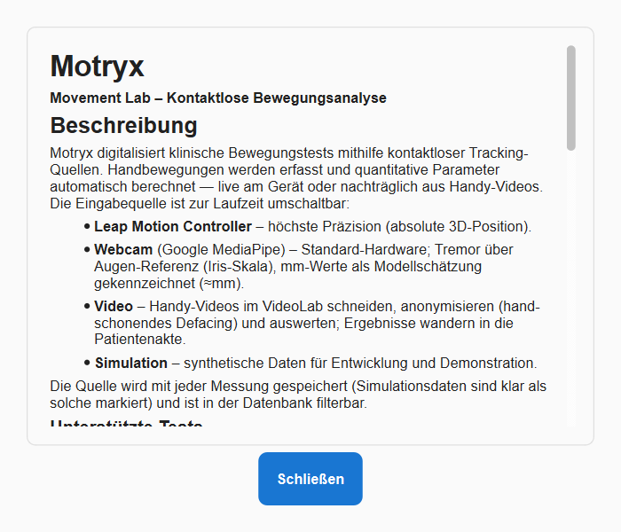